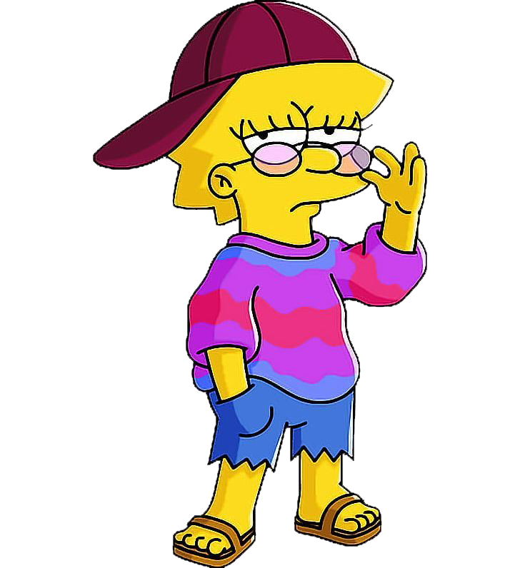

Lisa Marie Simpson é a filha do meio, de Homer e Marge Simpson, seu irmão mais velho é o Bart e a caçula Maggie. Nasceu no dia 9 de Maio de 1983. Ama pôneis. Bonecas Malibu Stacy são imagens inspiradoras na sua opinião. É uma excelente saxofonista. É uma excelente jogadora de Hockey. Só tirou um único F em seu histórico, devido ao videogame que a corroeu. É budista. Já teve um jornal, O Vestido Vermelho. Já fez um estudo que comprovou que um hamster é mais inteligente que Bart.Brevemente foi dona de uma pônei, porém devido a falta de dinheiro e o sofrimento de seu pai para pagá-la ela se viu forçada a devolvê-la. Seu filme favorito é A Pequena Sereia. Ela é a personagem mais odiada dos Simpsons nos Estados Unidos.
Carismática, doce e inteligente, eis a definição perfeita para Lisa Simpson. O conhecimento de Lisa abrange uma vasta gama de assuntos, matemática, física, astronomia, medicina, história, geografia, ciências, biologia, religião, etc, de fato uma menina muito dedicada. Ela apresenta características raramente vistas em Springfield, como espiritualidade e a busca de soluções por meios pacíficos. Uma jovem notavelmente preocupada com questões ambientais, é vegetariana e naturalista, defenderia uma árvore com sua vida se necessário. Todos já sabem que essa fofa é superdotada, em "They Saved Lisa's Brain", é dito que ela tem um QI de 159, também nesse episódio ela se torna parte da Mensa, um clube para pessoas com alto nível intelectual.